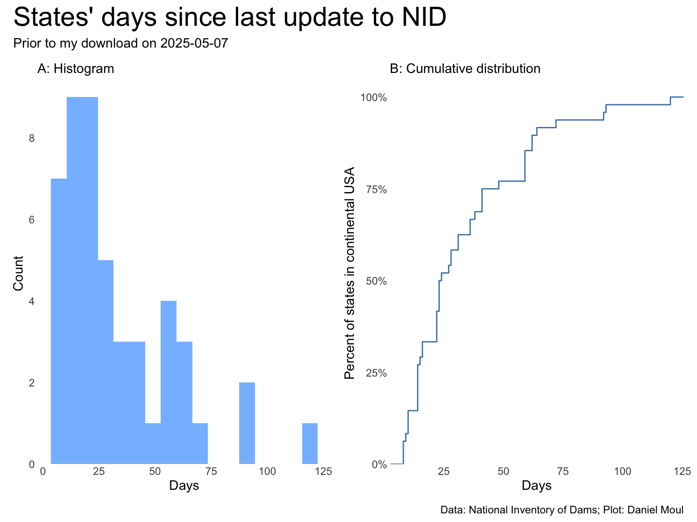

There is a glossary of terms and a brief description of each field on the developer page which also summarizes additional information available via API. The NID data dictionary was last updated in December 2021.
latitude and longitude are at dam centerline expressed as a single value in decimal degrees, NAD83.
“nid” in the name refers to a value created for this database. In many cases these are conveniences for analysis and plotting. For example, nidHeight combines is the “maximum value of dam height, structural height, and hydraulic height. Accepted as the general height of the dam”.
National Inventory of Dams
More than 90,000 dams nation-wide
Disclaimer You must agree to the following terms to continue to the site.
You are accessing a U.S. Government (USG) Information System (IS) that is provided for USG-authorized use only. By using this IS (which includes any device attached to this IS), you consent to the following conditions:
The USG routinely intercepts and monitors communications on this IS for purposes including, but not limited to, penetration testing, COMSEC monitoring, network operations and defense, personnel misconduct (PM), law enforcement (LE), and counterintelligence (CI) investigations. At any time, the USG may inspect and seize data stored on this IS. Communications using, or data stored on, this IS are not private, are subject to routine monitoring, interception, and search, and may be disclosed or used for any USG-authorized purpose. This IS includes security measures (e.g., authentication and access controls) to protect USG interests–not for your personal benefit or privacy.
Notwithstanding the above, using this IS does not constitute consent to PM, LE or CI investigative searching or monitoring of the content of privileged communications, or work product, related to personal representation or services by attorneys, psychotherapists, or clergy, and their assistants. Such communications and work product are private and confidential. See User Agreement for details.
The National Inventory of Dams (NID) API is a complete, programmable interface to all NID functionality. The NID API is a RESTful web service, using standard technologies like HTTP verbs, headers, and status codes.
The NID website is built on this API, and all of its services are available for integration into your application. To get started, we recommend exploring the website to learn about the functionality that is available.
Currently, you can develop your application with the public API. If you need assistance, please email us at NID@usace.army.mil with any questions.
latitude and longitude are at dam centerline expressed as a single value in decimal degrees, NAD83.
volume refers to the dam; storage refers to the capacity of the dam to store water.
12.1.2 Other sources of data
See river and hydrology data at the end of this chapter and the list in Acknowledgements section of Chapter 1 Introduction.
12.2 Limitations
As in any large data set consisting of records provided by many parties over many years…
There are some errors and inconsistencies in the data.
There are a lot of missing values for some fields. Very few records have data in every field.
primaryPurposeId requires someone to pick one reason. Many dams were built for multiple reasons, or at least now serve multiple purposes. Views that look only at primary purpose may present a skewed view.
This data set is subject to selection bias. Some state departments may be more diligent in recording information for small dams or have preferences in how categorize purpose or encode data in other fields.
Data freshness: While it’s not obvious how often the states provide relevant updates to the NID, it is a good sign that the most recent update occurred only 8 days prior to my download, and half the states updated at least one record in the month before I downloaded it (Figure 12.1 panel B). The longest period since update by any state is 120 days. However, we don’t know for sure that all states provide updates when there is a relevant update–-or how long information may sit in government offices before being sent to the NID. All that said, given every state provided an update within the last 120 days, it seems to me that we can be confided that the data is actively and regularly updated.
Show the code
##| column: page-rightp1 <- dta_for_plot |>ggplot() +geom_histogram(aes(days_since_last_update),binwidth =7) +scale_y_continuous(breaks =0:10*2,expand =expansion(mult =c(0, 0.04))) +labs(subtitle ="A: Histogram",x ="Days",y ="Count" )p2 <- dta_for_plot |>ggplot() +stat_ecdf(aes(days_since_last_update),linewidth =0.5,color ="steelblue") +scale_y_continuous(labels =label_percent(),expand =expansion(mult =c(0, 0.04))) +labs(subtitle ="B: Cumulative distribution",x ="Days",y ="Percent of states in continental USA" )p1 + p2 +plot_annotation(title ="States' days since last update to NID", subtitle =glue("Prior to my download on {nid_download_date}"),caption = my_caption )

Figure 12.1: NID update frequency
12.3 TODOs and questions
DONE: remove stuff in prepare-data.R that is no longer used
DONE: Decide whether to keep RMSE in ruggedness.qmd - removed it.
DONE: Add commentary above plots that lack it.
DONE: Confirm auto-dark is working OK. Including: should I stay with SVGs or move pack to PNGs? The SVGs are much bigger. I went back to cosmo theme + plots as PNGs
DONE: confirm “Michigan corrected” wherever surfaceArea and nidStorage are used
DONE: Resolve remaining “TODO’ statements in markup (not in code blocks–leave them)
DONE: Ensure captions have the right data sources
STARTED: Remove “processed” files no longer needed
TODO: Remove “raw” files not used
TODO: Push to GH
TODO: Render to GH Pages
12.3.1 Exclude ancillary dam features. I only want “every main dam”.
Exclude any record with a value in otherStructureID. Data exists in this field only for structures other than the main dams.
12.3.2 Exclude dikes and levees
DONE: Multiple dikes and levees around the same water feature all “claim” the water, inflating the nidStorage, surfaceArea, etc. See examples in Table 12.1 below. Since I’m only interested in dams, I exclude them by removing all rows of data that include “[Dd]ike” if not accompanied by “[Dd]am”. This removes about 14K rows (92K to 78K)
filter(!(str_detect(name, "[Ddike]") & !str_detect(name, "[Dam]"))) |> # no dikes period unless with dam
There are other cases of duplicate accounting, for example the following:
nidId "OH00581", # Grand Lake St. Marys - East Embankment in Ohio (duplicate surface area with West Embankment)
nidId "WA00266" # North Dam; same surface area and nidStorage as Dry Falls Dam
12.3.3 Address other special cases creating outliers
DONE: Remove outliers when it makes sense do to so (especially related to nidStorage and surfaceArea).
The most egregious case is the modest MI00650 Soo Locks which “claims” a large portion of the water of Lake Superior as discussed in Chapter 6 Numbers.
Show the code
dams_all |>st_drop_geometry() |>slice_max(order_by = surfaceArea, n =20) |>arrange(desc(surfaceArea)) |>select(state, name, nidId, surfaceArea, nidStorage) |>gt() |>tab_header(md("**Top 20 NID records with largest surfaceArea**")) |>tab_source_note(md("*Source: National Inventory of Dams. Table: Daniel Moul*")) |>fmt_number(columns =c(surfaceArea, nidStorage),decimals =0)
Top 20 NID records with largest surfaceArea
state
name
nidId
surfaceArea
nidStorage
Michigan
Soo Locks
MI00650
20,255,000
277,540,000
Florida
Herbert Hoover Dike - CIZ G
FL36001
467,200
8,519,000
Florida
Herbert Hoover Dike - CIZ A
FL36001
467,200
8,519,000
Florida
Herbert Hoover Dike - CIZ F
FL36001
467,200
8,519,000
Florida
Herbert Hoover Dike - CIZ C
FL36001
467,200
8,519,000
Florida
Herbert Hoover Dike - CIZ B
FL36001
467,200
8,519,000
Florida
Herbert Hoover Dike - CIZ D
FL36001
467,200
8,519,000
Florida
Herbert Hoover Dike - CIZ E
FL36001
467,200
8,519,000
Arkansas
Bull Shoals Dam
AR00160
454,400
5,408,000
Colorado
Flatiron Dam
CO01654
381,500
1,136
South Dakota
Oahe Dam - Fort Yates Flood Protection Project
SD01095
376,000
23,600,000
South Dakota
Oahe Dam
SD01095
376,000
23,600,000
Minnesota
Lower Red Lake Dam
MN00573
288,640
3,428,000
Texas
Toledo Bend Saddle Dike 2
LA00030
182,490
5,097,500
Texas
Toledo Bend Saddle Dike 3
LA00030
182,490
5,097,500
Texas
Toledo Bend Saddle Dike 1
LA00030
182,490
5,097,500
Louisiana
Toledo Bend
LA00030
182,490
5,097,500
Wisconsin
Menasha Lock and Dam
WI00814
173,000
2,430,000
Nevada
Hoover Dam
NV10122
162,700
30,237,000
Arizona
Glen Canyon Dam
AZ10307
160,784
25,025,826
Source: National Inventory of Dams. Table: Daniel Moul
Table 12.1: Top 20 NID records with largest surfaceArea
12.4 NID data column detais
The NID’s nation.gpkg file has more than 91K rows of data. After partial cleaning and converting appropriate columns from character to numeric type, variables can be grouped by Date, character and numeric type.
The NID data includes damLength, however I don’t use it due to the variable nature of what it includes:
damLength: Length of the dam, in feet, which is defined as the length along the top of the dam. This also includes the spillway, powerplant, navigation lock, fish pass, etc., where these form part of the length of the dam. If detached from the dam, these structures should not be included.
Nor do I use volume, since in the NID this refers to the volume of the dam, not the water behind the dam:
volume: The total space occupied by the materials forming the dam structure computed between abutments and from top to bottom of dam. No deduction is made for small openings such as galleries, adits, tunnels, and operating chambers within the dam structure. Portions of powerplants, locks, spillway, etc., should be included only if they are necessary for the structural stability of the dam.
12.5 River shapefiles available from the NWS
https://www.weather.gov/gis/Rivers
Source: National Weather Service National Operational Hydrologic Remote Sensing Center https://www.nohrsc.noaa.gov/gisdatasets/ The NOHRSC provides and maintains the NWS Integrated Hydrologic Automated Basin Boundary System (IHABBS) GIS database to support river and flood forecasting throughout the nation. Basin boundary data sets and RFC boundaries are provided here in shapefiles that have been tarred and gzipped.